墓地・霊園 当社がおすすめしております奈良、大阪、その他エリアの霊園・墓地をご紹介しています。 霊園・墓地からお探しのお客様は、どうぞご覧ください。 奈良県 大阪府 奈良県の霊園・墓地 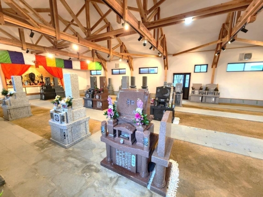 観音寺墓堂 所在地奈良県桜井市外山 608-1 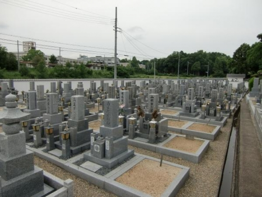 発志禅院（発志院墓地） 所在地奈良県大和郡山市外川町 永代使用料1聖地350,000円 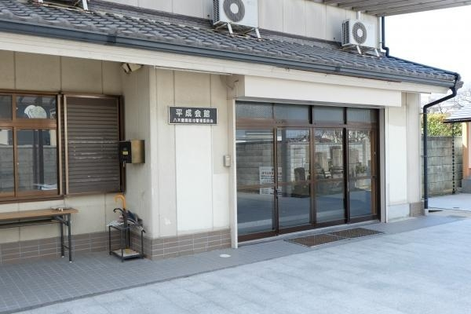 八木醍醐墓地 所在地奈良県橿原市南八木町 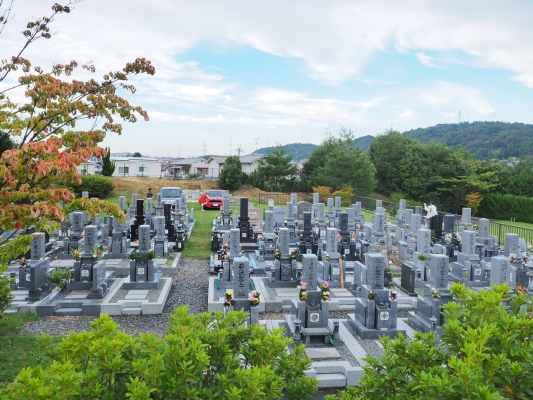 小明霊園 所在地生駒市生駒台南 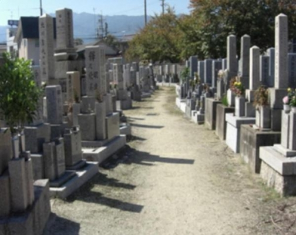 春日町墓地 所在地奈良県大和高田市春日町1丁目 永代使用料1聖地 350,000円 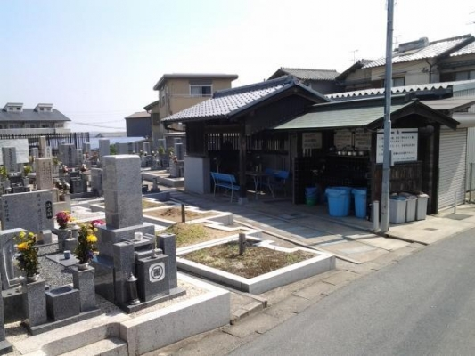 穴虫二上新墓地 所在地奈良県香芝市畑4丁目 永代使用料1聖地30万円 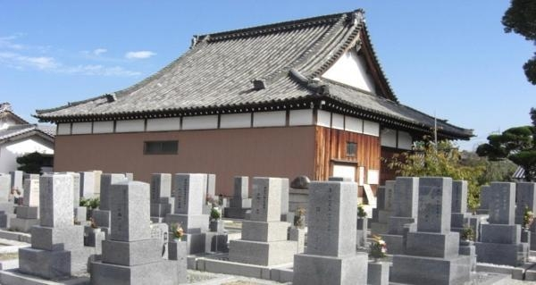 正行寺 所在地奈良県大和高田市有井 永代使用料1聖地 400,000円 王寺霊園 所在地奈良県北葛城郡王寺町本町 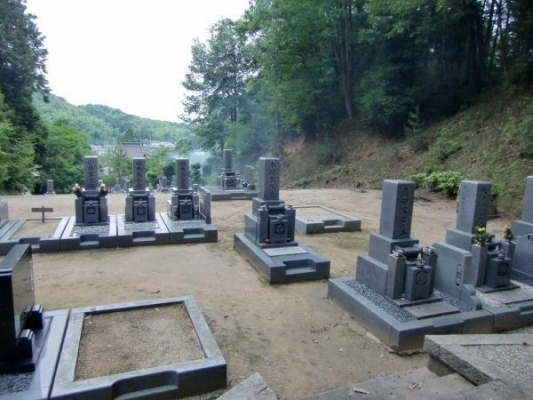 光雲寺 所在地奈良県高市郡高取町越智 永代使用料1聖地1段目350,000円 2段目300,000円 3段目270,000円 4段目250,000円 丘カロート230,000円 大阪府の霊園・墓地 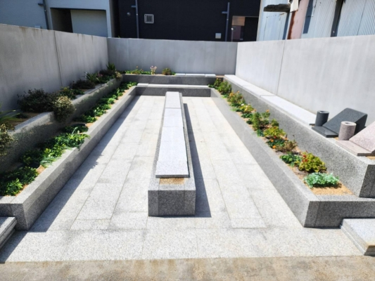 長法寺樹木葬 所在地大阪府大阪市住之江区安立1丁目10-22 永代使用料込 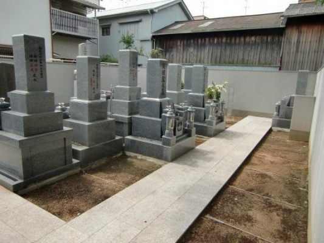 長法寺墓地 所在地大阪府大阪市住之江区安立1丁目 永代使用料1聖地 800,000円 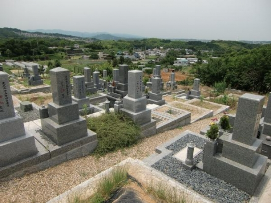 山田西共同墓地 所在地大阪府河内郡太子町山田 永代使用料1聖地75,000～、南向き区画は100,000円 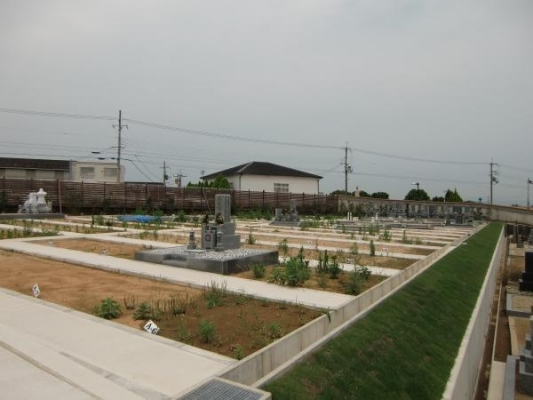 山本共同墓地 所在地大阪府大阪狭山市山本東